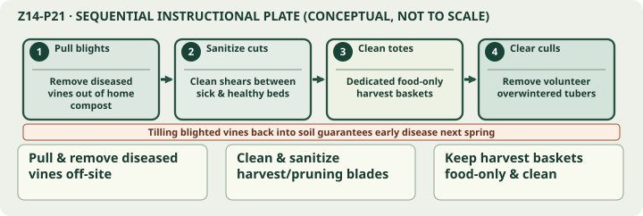

Z14-P21 · Food production and preservation · New manuscript
Practice autumn garden sanitation and tool hygiene to curb next-year blight
Break overwintering pest and fungal cycles across northern gardens so spring beds start healthy.
When it applies · End-of-season garden cleanup and routine pruning/harvesting across all vegetable plots.
Equipment · Clean pruners/trowels, soap and diluted sanitizing rinse for tools, wheelbarrows, and separate yard-waste disposal for diseased vines.

Actions
- Pull and remove diseased crop residues (blighted tomato/potato vines, powdery-mildewed squash stems, clubroot brassicas) at season's end—bagging or disposing of them per local municipal yard-waste rules rather than leaving them on the soil or in cold backyard compost piles.[P03]
- Clean dirt off shovels, harvest knives, and pruning shears routinely, and sanitize blades between cutting diseased plants and healthy plants so sap does not transmit bacterial or viral wilts across the bed.[P03, K04]
- Keep harvest baskets and totes clean and dedicated to food crops (never using buckets that held manure, oil, or lawn chemicals), washing bins with safe water before storing.[P16, W06]
Failure recognition · Tilling blighted potato and tomato vines straight back into the garden soil in October, guaranteeing early blight spores erupt next June.[P03]
Verify · Confirm diseased foliage removed from home compost, tools cleaned dry and oiled for winter, and harvest totes kept strictly food-safe.[P03, P16]
Stop or change course · Never leave rotting cull potatoes in the soil over mild winters where volunteer tubers carry devastating late-blight pathogens into spring.[P03]
Evidence and editorial notes
- K04 · USDA Forest Service · Handtools for Trail Work (0523-2810-MTDC) (agency handbook)
- Section: Sharpening, Filing and Handle Maintenance · Conditions: Maintaining cutting edges and wood tool handles in field or shop
Support: Secure the tool firmly before filing or honing, keep fingers behind file guards, preserve factory bevel geometry without overheating steel and replace loose or cracked handles rather than taping them.
Limitations: Field touch-up honing does not correct chipped, cracked or heat-annealed steel blades. · Conflicting evidence: None; separates routine edge maintenance from unsafe handle patching.
Editorial note: Guides sharpening, rust prevention and handle-failure retirement cards. · Specialist reviewer: Tool maintenance and forestry safety
Primary source · checked 2026-11-24 - P03 · University of Minnesota Extension · Planting the Vegetable Garden (current web edition)
- Section: Watering, Mulching, Crop Rotation, and Integrated Pest Management · Conditions: Home vegetable plots across seasonal dry/wet swings
Support: Water deeply at the soil base rather than overhead foliage to conserve moisture and curb fungal disease, mulch soil to stabilize temperature and weeds, rotate plant families across seasons, and identify pests before choosing least-toxic controls.
Limitations: Untreated rainwater or suspect surface water should not be splashed onto ready-to-eat leafy crops immediately before harvest. · Conflicting evidence: None; aligns with FSG-4 clean produce handling.
Editorial note: Grounds resilient low-input gardening and biological pest management. · Specialist reviewer: Extension horticulture and integrated pest management
Primary source · checked 2026-11-24 - P16 · USDA / FDA / CDC · Four Steps to Food Safety (current web edition)
- Section: Clean, Separate, Cook, Chill > Produce Washing and Cross-Contamination · Conditions: Garden-to-kitchen harvesting, food prep, and preservation workspaces
Support: Wash hands 20 seconds with soap and safe water, scrub firm produce under running safe water before peeling/cutting, keep raw animal foods strictly separate from ready-to-eat produce, and sanitize prep surfaces and utensils between tasks.
Limitations: Washing produce with soap, detergent, or bleach is unsafe and not recommended. · Conflicting evidence: None; extends F01–F03 into garden harvest and home preservation.
Editorial note: Anchors kitchen sanitation and cross-contamination barriers in Z14. · Specialist reviewer: Food safety and public health
Primary source · checked 2026-11-24 - W06 · CDC · How to Create an Emergency Water Supply (current web edition)
- Section: How to store emergency water; Safe storage containers · Conditions: Potable water intended for emergency storage
Support: Prefer sealed commercial water or clean food-grade tight-closing containers. Avoid containers that held toxic chemicals.
Limitations: Container shelf durability and rotation depend on plastic/material type and storage heat. · Conflicting evidence: None; reinforces strict raw-vs-clean segregation.
Editorial note: Used to enforce labeling and dedicated raw/potable vessel separation. · Specialist reviewer: Drinking-water safety and public health
Primary source · checked 2026-11-24
Source lineage · UMN Extension Vegetable Crop Management; new manuscript · Classification · New manuscript.